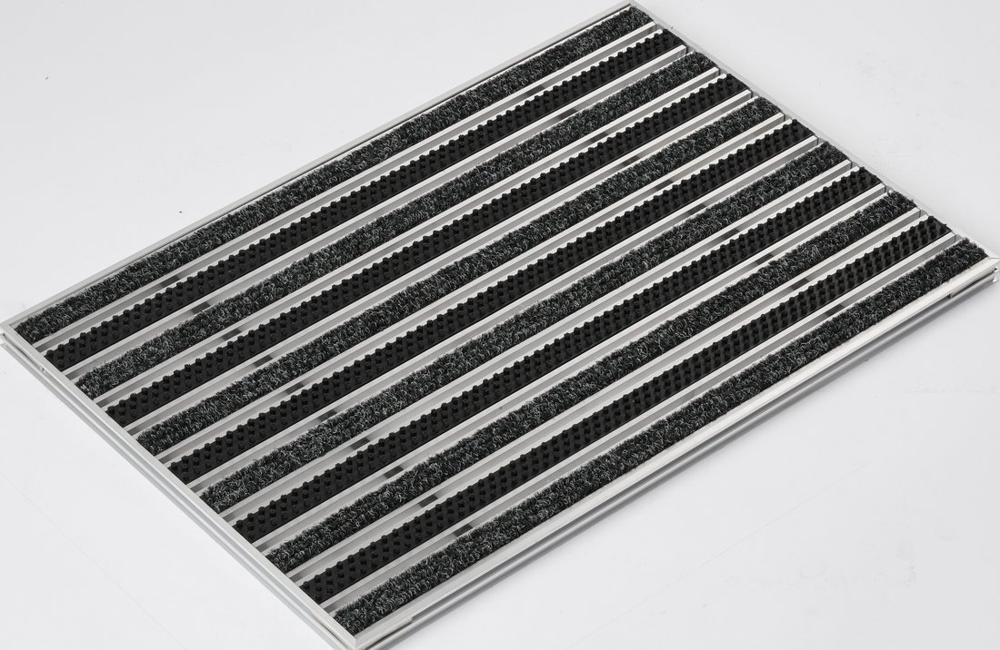

Wycieraczka aluminiowa z mixem rypsu i szczotki, profil niski 12/30 mm
Mix tekstylno-szczotkowy łączy szczotkę, która zbiera piasek i błoto, z rypsem, który wyciera resztę wilgoci. Dobrze sprawdza się przy wejściach, gdzie jest dużo brudu, ale wycieraczka ma też estetycznie wyglądać.
Niski profil 12/30 mm jest cienki, więc mieści się we wnęce i pod drzwiami, które otwierają się tuż nad wycieraczką.
Mata 40×60 cm już od 198,00 zł netto (243,54 zł brutto). Cena zależy od wymiaru, dokładną kwotę policzysz w konfiguratorze.
Dane techniczne
| Profil | Profil niski 12/30 mm |
| Wkład | Mix: ryps + szczotka |
| Wymiar | Na wymiar, dowolna długość i szerokość, także nietypowy kształt |
| Cena za m² | 825,00 zł netto (1 014,75 zł brutto) |
| Próg najazdowy | Aluminiowy, do dokupienia w konfiguratorze (68 zł netto / mb) |
| Ramka | Aluminiowa ramka kątowa, do wyboru w konfiguratorze |
| Dostawa | Wysyłka na terenie całej Polski |
Do jakich miejsc pasuje ta wycieraczka?
Profil niski to wybór do domów, biur, wnęk, wiatrołapów i miejsc z niewielkim progiem. Wkład, który wybrałeś, najlepiej sprawdzi się tutaj:
- wejścia do domów i budynków usługowych
- sklepy, restauracje, hotele, szkoły
- wejścia z dużą ilością piasku i błota
Zalety
- szczotka zdrapuje brud
- ryps dosusza podeszwy
- estetyczny wygląd dzięki kolorowemu rypsowi
- dobra do dużego ruchu
Pielęgnacja
Szczotkę przeczyść szczotką ręczną, ryps odkurz.
Jak zamówić?
- Zmierz wnękę lub miejsce przed drzwiami: długość i szerokość.
- W konfiguratorze wpisz wymiary, wybierz profil, wkład i kolor.
- Dodaj do koszyka i wyślij zamówienie. Przy nietypowym kształcie użyj kreatora kształtu.
Najczęstsze pytania
Kiedy wybrać mix rypsu i szczotki?
Gdy buty bywają bardzo zabrudzone, a wycieraczka ma też dobrze wyglądać. Szczotka usuwa piasek i błoto, a ryps wyciera wilgoć.
Czy w tej wycieraczce mogę wybrać kolor rypsu?
Tak. Kolor rypsu wybierasz w konfiguratorze: brązowy, beżowy, czarny, szary, złoty lub czerwony.
Czym różni się profil niski 12/30 mm od wysokiego 19/30 mm?
Profil niski 12/30 mm jest cieńszy i pasuje do wnęk, wiatrołapów i miejsc z niewielkim progiem. Profil wysoki 19/30 mm jest mocniejszy i przeznaczony do wejść o dużym natężeniu ruchu.
Ile kosztuje ta wycieraczka?
Cena zależy od wymiaru. Ta wycieraczka kosztuje 825,00 zł netto (1 014,75 zł brutto) za m². Najmniejsza mata 40×60 cm kosztuje od 198,00 zł netto (243,54 zł brutto). Dokładną cenę zobaczysz w konfiguratorze po wpisaniu długości i szerokości.